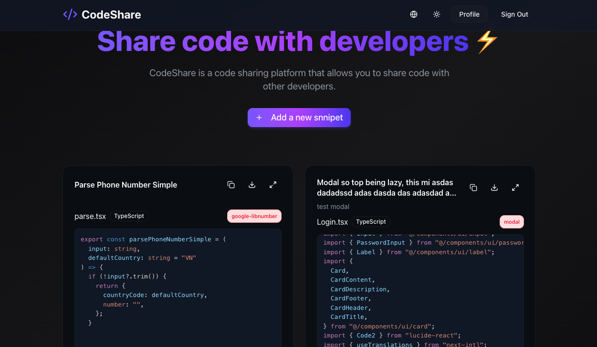
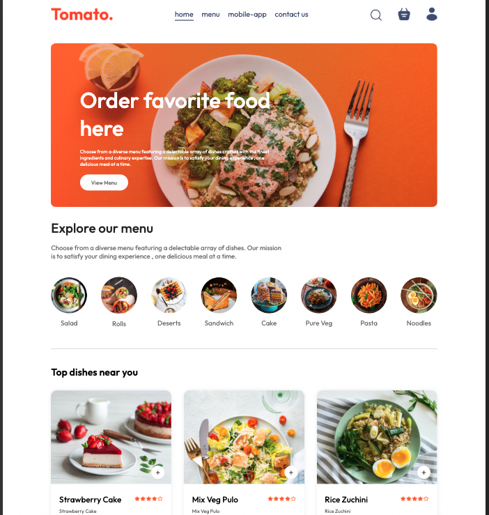
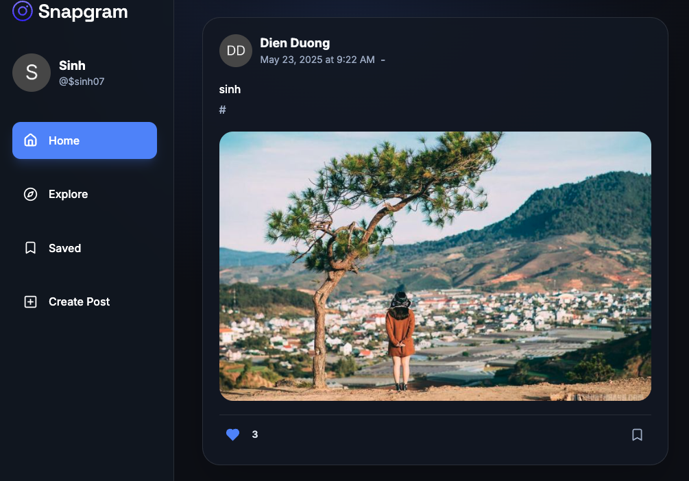
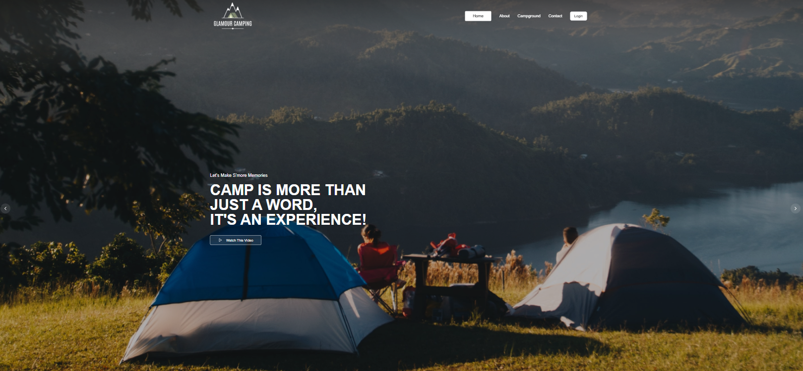
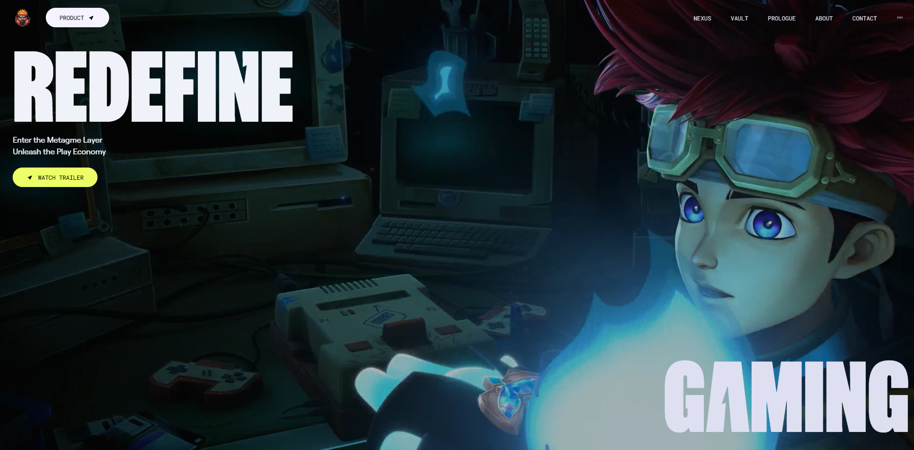

React.js, Next.js, TypeScript, JavaScript ES6+, and modular, production-ready frontend delivery.
Frontend Developer
Hi, I'm
Thien Sinh.
I build scalable React and Next.js products, from multi-tenant SaaS platforms to complex enterprise workflows.
- 5+ years
- Frontend delivery
- SaaS
- Multi-tenant products
- 2 teams
- Enterprise experience
Based in Vietnam
Available worldwide
Available worldwide


Frontend Developer
Frontend Developer with 5+ years of experience building enterprise and SaaS web applications. I specialize in React, Next.js, TypeScript, scalable frontend architecture, multi-tenant systems, performance-focused applications, and complex business workflows.
Skills
React Query, Redux Toolkit / RTK Query, Zustand, SWR, and predictable asynchronous data workflows.
Micro-frontend architecture, multi-tenant SaaS, and modular frontend systems for complex business workflows.
Git, Vite, Webpack, Firebase, Yarn, NPM, Cursor, Claude, MCP, and practical AI-assisted development workflows.
Tailwind CSS, SCSS, Ant Design, shadcn/ui, Web Workers, virtualization, lazy loading, and Core Web Vitals optimization.
Enterprise delivery
Experience
Multi-tenant SaaS Sales Management Platform
Developing SaaS solutions for sales operations and online commerce, including POS, inventory, cash flow, reporting, and merchant storefronts.
- Developed POS, sales, inventory, cash flow, product management, and reporting features.
- Built reusable UI with React Query and Web Workers for efficient data handling.
- Optimized a Next.js storefront for Core Web Vitals and large product-list virtualization.
Dashboard Module
Feb 2025 - Feb 2026 · Built a centralized dashboard with a social feed, weekly calendar, and team overview using micro-frontend architecture.
- Improved initial load and rendering through lazy-loaded federation remotes and bundle optimization.
- Applied caching strategies and component memoization for smoother rendering.
Ticket Management
Oct 2024 - Feb 2025 · Developed listing, filtering, status tracking, and role-based access for issue resolution.
- Supported issue resolution for 200+ internal staff.
- Resolved allowed actions from API permissions instead of hardcoded roles.
Admin Portal
Dec 2023 - Jun 2024 · Built an admin dashboard for system configuration and user management, serving 50 core operations administrators.
- Created scalable table components and bulk-action patterns reused across 5+ admin sub-modules.
- Implemented permission-based access aligned with backend role models.
Core HR Modules
Oct 2021 - Dec 2023 · Delivered leave management, employee directory, profiles, and project-based time tracking for HRMS.
- Built multi-level approval workflows and leave-balance calculations for 500+ monthly requests.
- Supported 1,000+ employee records and time tracking for 300+ employees, including validation, CSV export, and notifications.
Independent work
Selected Builds
Product experiments that demonstrate end-to-end frontend craft, from interface design to production deployment.
01
Next.js / Full-stack
CodeShare Demo
A web-based platform that allows developers to create, manage, and share reusable code snippets with syntax highlighting and language tagging.
Next.js, TypeScript, Tailwind CSS, Node.js, MongoDB
02
React / E-commerce
Foodelivery Demo
A responsive food delivery demo application designed to showcase a modern UI/UX for online food ordering.
React.js, Tailwind CSS, Node.js, MongoDB
03
React / Social
SnapGram Demo
A social media application that allows users to create, edit, like, and save posts through a simple and seamless experience.
React.js, Tailwind CSS, Appwrite
04
Next.js / Template
Camp Booking
A modern booking interface for campgrounds, optimized for search, reservation, details, and fast booking actions.
Next.js, Tailwind CSS
05
Animation
GSAP Animate
A web project showcasing smooth interactive animations, transitions, parallax effects, and scroll-based motion with GSAP.
React.js, Tailwind CSS, GSAP